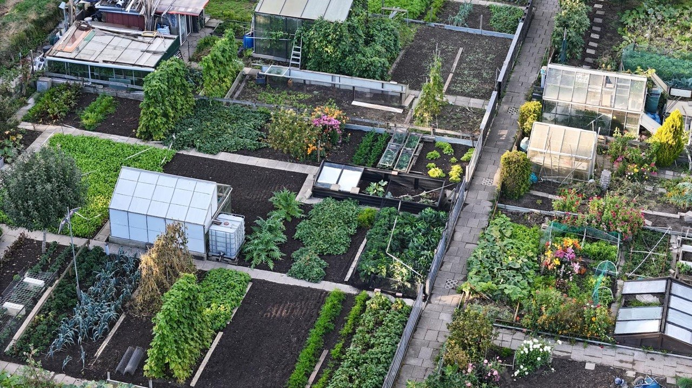
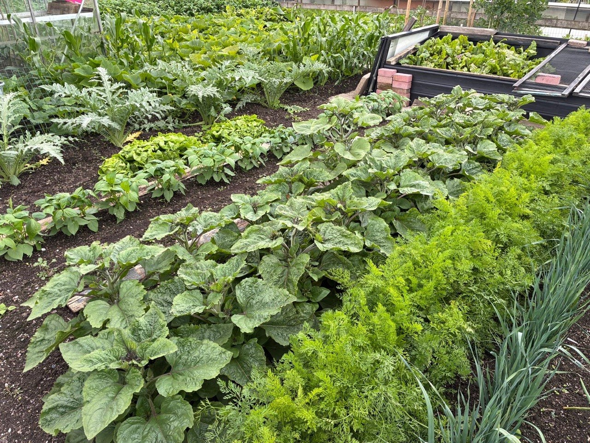

Geef Molenvliet
toekomst.
Een volkstuin is meer dan een stukje grond. Het is natuur, ontspanning en een gemeenschap die hier al jaren groeit.
Teken de petitie ↗Door Eendracht Sterk
Hier groeit
verbinding.
Volkstuinvereniging Door Eendracht Sterk, in het park Het Noordhoekse Wiel, moet mogelijk plaatsmaken voor een nieuw woonwagenkamp.
Wij vragen aandacht voor wat hier al bestaat: een groene plek waar mensen samen tuinieren, oogsten, leren en tot rust komen. Laat deze tuinen onderdeel blijven van de toekomst van Papendrecht.
Ontdek waarom volkstuinen ertoe doen →
Ruimte voor natuur
Bloemen, groenten, bomen en water vormen samen leefruimte voor insecten en vogels.
Ruimte voor iedereen
Tuinders van verschillende leeftijden en achtergronden vinden elkaar in de tuin.
Ruimte om te groeien
Met aandacht en geduld wordt een stukje grond een plek om op te laden en trots op te zijn.
Behoud ons volkstuincomplex.
Steun het initiatief en teken de petitie voor Molenvliet.